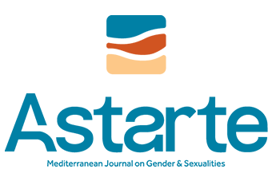

A space for critical scholarship
Astarte is an open-access, peer-reviewed journal dedicated to advancing critical and interdisciplinary scholarship in the field of gender and sexuality studies.
Based in Malta, at the heart of the Mediterranean, Astarte offers a space for dialogue between North and South, East and West, connecting diverse feminist, queer, trans, and decolonial perspectives from across cultures, languages, and histories.
The story behind the name
The journal’s name evokes Astarte, the ancient Phoenician and Canaanite goddess of love, fertility, and war, whose worship spread across the ancient Mediterranean. Her temple once stood on Maltese soil at Tas-Silġ, a site symbolising continuity between the Neolithic and the classical world.
Endurance and transformation across time and place.
The journal embodies this symbolism as it examines how gender and sexuality have shaped, and continue to shape, the human experience.
The journal and the conference
Connected through their shared scholarly community, the journal and conference create opportunities for interdisciplinary exchange. For journal submissions, consult the official journal website for its current guidance and review process.